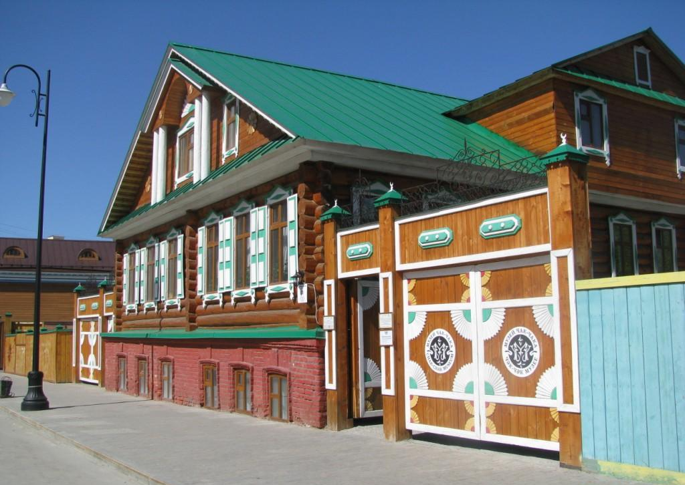

About editor and view mode
不只是簡報編輯器
選擇您感興趣的內容以供進一步參考。一個服務、兩種角色：創作者用「路線編輯器」編織故事，訪客用「查看模式」自由探索。
About service and features
Knowledge Explorer 能為你做什麼
喀山旅遊互動簡報服務的原型：把城市的歷史、文化與氛圍，變成一段可以自己選擇的旅程。
-
兩種操作模式
路線編輯器負責創作，查看模式負責呈現，同一份內容兩種面貌。
-
4 個分支選項
每張投影片可延伸出 4 條路線，訪客依當下的興趣決定下一步。
-
所見即所得編輯
內建文字編輯器，標題、段落、清單與照片都能直接排版。
-
不需要寫程式
每個人都能建立自己的互動式簡報，不必學習任何程式語言。
How it works
如何運作
選擇下方任一步驟，右側會即時切換到對應的操作畫面。
Kazan
一座值得慢慢說的城市
克里姆林宮、清真寺、博物館與甜點——把它們接成一條路線，讓訪客自己挑。
- 喀山克里姆林宮 · 世界文化遺產
- 伊斯蘭文化博物館
- 國家博物館
-

恰克恰博物館 · 韃靼甜點 - 喀山家庭中心「大鍋」